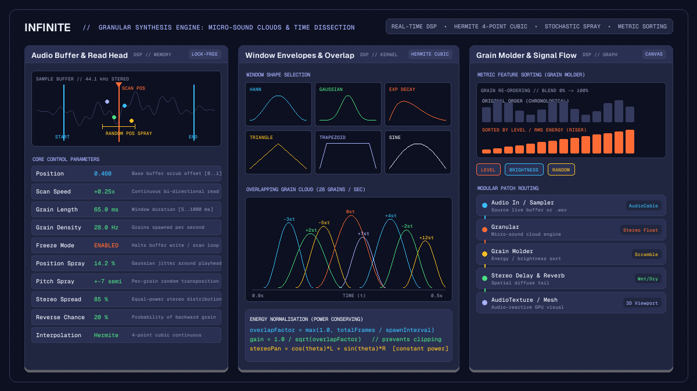

Creative
Granular synthesis in modular audio: soundscapes and grain clouds
Explore granular synthesis in modular audio: grain clouds, window functions, time-stretching, stochastic spray, and feature sorting in Infinite.

on this page
- Principles of micro-sound and granular synthesis
- Anatomy of a grain: windows and envelopes
- Real-time engine architecture in Infinite
- The Granular node: clouds, spray and freeze
- The Grain Molder node: topological sorting and scrambling
- Modular routing: modulation, effects and visuals
- Comparing granular synthesis and spectral stretching
- Technical limits and performance considerations
- Summary

Granular synthesis in modular audio transforms continuous recorded sound into swarms of microscopic acoustic quanta. Rather than playing back an audio recording as a fixed linear timeline, granular synthesis deconstructs source audio into tiny acoustic fragments called grains, typically lasting between 5 and 100 milliseconds. By controlling the density, duration, pitch transposition, spatial distribution, and playback position of hundreds of simultaneous grains, sound designers can stretch time to infinity, dissolve field recordings into shimmering ambient clouds, or restructure rhythmic loops into completely new acoustic textures.
In Infinite, granular processing is not confined to an isolated plugin window or a static offline bounce. Granular processing operates directly on the real-time node canvas, where per-sample DSP, modulation signals, and GPU graphics interact within a single unified graph. Audio from microphones, live instruments, or loaded audio samples can be continuously streamed into granular buffers, modulated by low-frequency oscillators and rhythmic sequencers, and patched simultaneously into spatial delay networks and reactive visual shaders.
This guide explores the technical foundations of real-time granular synthesis, the mathematics of grain windowing and energy normalisation, the architecture of Infinite's native Granular and Grain Molder nodes, and practical routing recipes for experimental sound design.
Principles of micro-sound and granular synthesis
The physical concept of micro-sound originates in the pioneering work of physicist Dennis Gabor and composer Iannis Xenakis, later formalized by Curtis Roads in Microsound. Gabor demonstrated that any continuous acoustic signal can be represented as a two-dimensional matrix of time-frequency quanta, analogous to quantum wave packets in quantum mechanics.
A single isolated grain lasting 20 milliseconds is too short for the human auditory system to perceive as a continuous musical tone. When heard alone, a micro-grain sounds like a dry click or brief tap. However, when dozens or hundreds of grains are scheduled in rapid succession or layered simultaneously, a psychoacoustic transformation occurs:
- Quasi-synchronous grain streams: when grains are emitted at strictly regular periodic intervals, the repetition rate introduces a perceived fundamental pitch equal to the emission frequency ($f_0 = 1 / \Delta t$). At low rates (1 to 20 Hz), the listener hears a rapid train of distinct impulses or rhythmic ratchets. As the emission density exceeds 30 to 40 Hz, the individual grains fuse into a continuous pitched tone, a phenomenon known as pulsar synthesis.
- Asynchronous grain clouds: when grain onset times, durations, and read positions are perturbed by stochastic jitter, the periodic pulse dissolves. The ear no longer tracks individual events or synthetic pitch pulses; instead, it perceives a diffuse, textural acoustic cloud. By modulating the variance of read offsets (position spray) and pitch jitter, a sound designer can smoothly transition from pristine sample playback to lush, cinematic drones.
Time-domain representation of grain emission:
Periodic Train (Pulsar):
+---+ +---+ +---+ +---+ +---+
| g | | g | | g | | g | | g | --> Perceived fundamental pitch
+---+ +---+ +---+ +---+ +---+
|<-- Delta t -->|
Stochastic Cloud (Asynchronous):
+-----+ +---+
| g1 | |g3 | +------+
+-----+ +---+ | g5 | --> Diffuse ambient texture
+-------+ +--+ +------+
| g2 | |g4|
+-------+ +--+Controlling this transformation requires precise real-time scheduling. In traditional tape-based composition, cutting and splicing thousands of microscopic fragments was a laborious manual task. In modern digital audio environments, digital signal processors generate, interpolate, envelope, and accumulate hundreds of active grains per audio buffer without latency or dropouts.
Anatomy of a grain: windows and envelopes
Extracting a raw slice of digital audio creates abrupt discontinuities at the start and end boundaries. If a grain begins or ends away from a natural zero-crossing, the instantaneous voltage step creates high-frequency spectral splatter, perceived as harsh clicks and buzzing.
To eliminate boundary clicks, every grain must be multiplied by a smooth windowing envelope $w(t)$ over its normalized lifespan $t \in [0, 1]$. The shape of this window determines both the temporal attack and the harmonic colour of the grain cloud:
Window function comparison:
Hann: Gaussian: Exponential Decay:
.-'-. .---. |\
.' '. .' '. | \
/ \ / \ | \..__
'-----------' '-----------' '-------'
Smooth spectrum Optimal focus Snappy strikeInfinite provides five distinct window functions within its native granular DSP engine:
1. Hann window
The raised cosine window is the standard choice for smooth time-stretching and ambient texture generation:
$$w(t) = 0.5 \cdot (1 - \cos(2\pi t))$$
The Hann window provides gentle attack and release slopes, with spectral sidelobes falling off at 18 dB per octave. It eliminates all transient clicks while preserving the harmonic purity of melodic source material.
2. Gaussian window
The Gaussian curve offers optimal mathematical localisation in both the time and frequency domains:
$$w(t) = \exp\left(-8 \cdot (2t - 1)^2\right)$$
Because the Gaussian curve approaches zero smoothly without abrupt truncation, it produces minimal spectral smearing. Grains windowed with a Gaussian envelope retain focused transient clarity, making it ideal for vocal textures and acoustic instruments.
3. Triangle window
The Bartlett or triangular window applies symmetric linear ramps:
$$w(t) = 1 - 2 \cdot |t - 0.5|$$
With sharper transitions at the apex and boundaries, the triangle window introduces subtle high-frequency harmonic edge, lending a bright, crystalline character to dense grain clouds.
4. Exponential decay window
Unlike symmetric windows, the exponential decay window mimics natural acoustic impact envelopes:
$$w(t) = \sin(\pi t) \cdot \exp(-3t) \cdot 2.3$$
This envelope combines a rapid, snappy onset with a curved decay tail. When applied to granular playback, it transforms sustained audio buffers into percussive micro-bursts, rain droplets, and metallic scatter.
5. Trapezoid window
The trapezoid window features steep linear attack and decay slopes (12% of total grain duration) flanking an 88% flat sustain plateau:
$$w(t) = \max\left(0, \min\left(1, \min\left(\frac{t}{0.12}, \frac{1 - t}{0.12}\right)\right)\right)$$
This envelope preserves the natural uncoloured amplitude of the source material for the majority of the grain duration, applying brief micro-fades only at the boundaries. It is particularly effective for granular loop slicing and stutter effects.
High-order fractional interpolation
When grains are pitch-shifted or played back at arbitrary speed ratios, the read position rarely aligns with discrete integer sample indices. Truncating to the nearest sample or using simple linear interpolation introduces noticeable aliasing and high-frequency noise.
Infinite's granular engine employs 4-point, 3rd-order Hermite cubic interpolation (ReadSampleHermite) for every sample lookup. Hermite interpolation fits a smooth cubic polynomial across four neighbouring sample points ($y_{-1}, y_0, y_1, y_2$), matching both position and first-order derivatives. This ensures continuous, artifact-free playback across pitch transpositions spanning multiple octaves.
Real-time engine architecture in Infinite
Executing granular synthesis in real time requires strict concurrency control and zero-allocation memory discipline. In Infinite, the granular subsystem separates duties between two core components:
GranularNode(main UI thread): manages sample loading, waveform cache rendering, start and end trim markers, parameter serialisation to.infpatch files, and user interaction.AudioGranularNode(real-time audio thread): executes inside the high-priority OS audio callback, advancing the master scan playhead, spawning active grains, computing Hermite interpolation, and accumulating stereo output buffers.
+-----------------------------------------------------------------+
| MAIN THREAD |
| |
| [GranularNode] |
| | |
| +---> Sample file loading (.wav, .flac, .aif) |
| +---> Waveform peak cache generation |
| +---> Visual start/end trim drag handles |
| +---> ParamRef registration for modulation cables |
+-----------------------------------------------------------------+
|
Lock-free SampleSlot & Atomic Params
|
v
+-----------------------------------------------------------------+
| AUDIO THREAD |
| |
| [AudioGranularNode] |
| | |
| +---> Live recording stream from Audio In pin |
| +---> Master scan playhead accumulator |
| +---> Pre-allocated Grain pool (kMaxGrains = 64) |
| +---> Stochastic RNG for jitter & pitch spray |
| +---> Hermite 4-point cubic interpolation |
| +---> Power-preserving energy normalisation |
| +---> Constant-power stereo panning |
+-----------------------------------------------------------------+
|
Lock-free Visual Snapshot Ring
|
v
+-----------------------------------------------------------------+
| VIEWPORT / UI |
| |
| Real-time grain dots rendering at 60 fps over waveform |
+-----------------------------------------------------------------+Pre-allocated grain pools and zero allocation
The audio thread must never allocate heap memory (malloc or new) or block on mutexes. Infinite pre-allocates a fixed pool of grain structures (kMaxGrains = 64) when the node is instantiated. When the spawn timer expires, the engine scans the pool for an inactive slot or reclaims the oldest finished grain.
If a new audio file is loaded during playback, the audio thread swaps sample buffers via an atomic lock-free SampleSlot. The old buffer is safely released on the background thread only after the audio thread has released its reference, preventing audio glitches.
Power-preserving energy normalisation
In granular synthesis, changing grain density or grain length dramatically alters the number of overlapping grains. At low density (e.g. 5 grains per second of 20 ms duration), overlap is minimal. At high density (e.g. 80 grains per second of 300 ms duration), twenty or more grains may sound simultaneously.
Summing twenty overlapping grains without compensation causes severe digital clipping and distortion. Conversely, dividing the output by the maximum theoretical grain count leaves sparse grain streams inaudibly quiet.
Infinite solves this using automatic power-preserving energy normalisation. For each spawned grain, the engine calculates the overlap factor based on duration and spawn interval:
$$\text{overlapFactor} = \max\left(1.0, \frac{\text{totalFrames}}{\text{intervalFrames}}\right)$$
$$\text{grainGain} = \frac{1}{\sqrt{\text{overlapFactor}}}$$
By scaling each grain inversely by the square root of the overlap factor, the engine maintains constant root-mean-square (RMS) acoustic energy across radical density and length automations.
The Granular node: clouds, spray and freeze
The native Granular node provides a complete suite of controls for sculpting micro-sound clouds:

Playhead positioning and scan speed
position[0.0 to 1.0]: sets the base playback read position within the sample buffer. When patched to an external modulation source, such as an LFO or envelope, this acts as a precision scrubbing control.scan[-2.0x to +2.0x]: enables autonomous playhead movement. Positive values scrub forward at fractional or accelerated speeds; negative values scrub backward. When set to 0.0, the playhead remains stationary, sustaining a micro-slice indefinitely.startandend[0.0 to 1.0]: visual trim markers that constrain grain emission to a specific region of interest. Whenloopis active, the scan playhead and spawned grains wrap seamlessly between these boundaries.
Dispersion and stochastic jitter
Uniform grain emission sounds robotic and synthetic. To create organic, living textures, Granular provides dedicated dispersion controls:
randomPos(Position spray): adds Gaussian stochastic jitter to the spawn position of each grain. Small amounts (5% to 15%) introduce subtle acoustic shimmer; large amounts (50% to 100%) scatter grains across the entire buffer, dissolving temporal structure into an ambient wash.randomLength: introduces random variation to individual grain durations, preventing repetitive flutter rhythms.randomPitch[0 to 24 semitones]: applies random pitch transposition to each grain. Setting this to 12 semitones produces wide harmonic octave clouds; micro-tuning settings (0.2 to 0.5 semitones) create lush natural chorusing.randomPanandwidth: scatters grains across the stereo field using constant-power equal-energy panning ($pan_L = \cos\theta, pan_R = \sin\theta$).reverseProb[0.0 to 1.0]: sets the probability that an individual grain will play backward. Mixing 20% to 30% reverse grains adds ethereal spectral backwards tails without reversing the master playback direction.
Freeze mode and live buffer capture
Toggling freeze halts advancement of the master scan playhead. The engine continues spawning overlapping grains from the current position with all active spray and pitch jitter parameters intact. This captures an infinite, stationary drone from any transient sound.
Additionally, Granular includes a dedicated audio input pin (record in). Sound designers can route live microphone signals, modular synth patches, or drum tracks directly into the node. Toggling record captures incoming audio into the internal ring buffer in real time, allowing immediate granular manipulation of live performance inputs.
The Grain Molder node: topological sorting and scrambling
While standard granular engines process audio chronologically, the Grain Molder node introduces a radically different paradigm: time-domain grain sorting.

Grain Molder slices incoming audio buffers into overlapping grains (10 to 500 ms) and evaluates an acoustic metric for every slice:
Level(RMS amplitude): calculates the root-mean-square energy of each grain. Sorting by level arranges the audio from quietest grains to loudest grains, or vice versa.Brightness(Spectral centroid): calculates the high-frequency energy distribution or zero-crossing rate. Sorting by brightness groups dark, low-frequency segments together, transitioning progressively into sharp, bright transients.Random: generates a deterministic, seed-based pseudo-random permutation of grain indices.
Grain sorting process in Grain Molder:
Original chronological order:
[G1: quiet] [G2: loud] [G3: medium] [G4: peak] [G5: silent]
Sorted by Level (ascending order):
[G5: silent] [G1: quiet] [G3: medium] [G2: loud] [G4: peak] --> Natural riserThe Amount control: continuous order interpolation
The defining control of Grain Molder is the amount slider [0.0 to 1.0]. Rather than snapping abruptly between original playback and sorted order, amount provides a continuous morph:
- At 0.0, the buffer plays back in its original chronological sequence.
- At 1.0, the buffer plays back in strictly sorted metric rank order.
- At intermediate values (e.g. 0.45), grains undergo continuous partial scrambling, introducing subtle rhythmic dislocations while preserving the overarching melodic contour.
When applied to complex acoustic material such as acoustic drum loops or orchestral recordings, automating the amount slider from 0.0 to 1.0 over four bars produces a natural, glitch-free build-up or riser without requiring volume automation or pitch risers.
Modular routing: modulation, effects and visuals
The power of granular synthesis expands exponentially when connected to Infinite's modular canvas. Because parameters in Infinite are exposed as typed ParamRef targets, any slider can be modulated by external control signals.
Modular canvas signal flow:
[Audio In] --------> (record in)
|
[LFO / Random] ----> (position)
|
[Step Sequencer] --> (pitchShift)
|
[ Granular ]
| (Stereo Audio Out)
+------------------------+
| |
v v
[ Stereo Delay ] [ AudioTexture ]
| |
[ Reverb ] [ AudioDisplacement ]
| |
[ Audio Out ] [ Render 3D ]Patch 1: Ambient orchestral shimmer cloud
- Drop an audio sample containing acoustic strings or piano into a
Granularnode. - Set
grainLengthto 140 ms,densityto 35 Hz, and select theGaussianwindow shape. - Set
scanto 0.05x for ultra-slow forward progression. - Set
randomPosto 20%,randomPitchto 12 semitones, andrandomPanto 85%. - Wire a slow sine
LFO(0.05 Hz) intopositionto gently wander across the sample. - Connect the stereo audio output of
Granularinto aStereo Delaynode, followed by a lushReverb. - Engage
freezeduring dense chords to lock the texture into an infinite, evolving ambient pad.
Patch 2: Granular drum break scrambler
- Load a classic breakbeat into a
Grain Moldernode. - Set
grainMsto 60 ms and choose theLevelsorting mode. - Wire a synchronized ramp LFO running at 1/2 bar into the
amountparameter. - As the LFO ramps from 0% to 100%, the break progressively reassembles itself from quiet ghost notes into clustered snare and kick peaks, creating an automated rhythmic fill.
- Route the output into an
AudioMeterto observe peak levels, ensuring the mix sits cleanly inside your master bus.
Patch 3: Synaesthetic granular audiovisuals
Granular synthesis produces intricate acoustic micro-transients that are ideally suited for driving real-time computer graphics. In Infinite, audio and visuals share the same memory space:
- Tap the stereo audio cable exiting
Granularand patch it into anAudioTexturenode. - The
AudioTextureconverts time-domain grains and spectral bands into a dynamic GPU texture. - Connect the texture into an
AudioDisplacementnode deforming a high-densityMesh Sphere. - As grains trigger and scatter across the stereo field, the 3D sphere ripples and pulses in direct synchronisation with individual grain windows.
- Pipe the deformed geometry into a
Render 3Dnode to view the resulting particle mesh in the live viewport.
For broader procedural routing possibilities, explore Infinite's node library and our companion architectural guide on node-based DAW workflows.
Comparing granular synthesis and spectral stretching
While both granular synthesis and spectral processing manipulate audio in non-linear ways, they operate on different mathematical principles:
| Parameter | Granular Synthesis (Granular) | Spectral Stretching (PaulStretch) |
|---|---|---|
| Domain | Time-domain windowed micro-quanta | Frequency-domain STFT phase randomisation |
| Grain duration | 5 ms to 1000 ms | 2048 to 65536 FFT sample bins |
| Pitch manipulation | Per-grain Hermite rate transposition | Spectral bin frequency shifting |
| Transient response | Preserves micro-attacks with tight windows | Diffuses all transients into glassy pads |
| Memory model | Lock-free sample ring buffers | Overlap-add IFFT synthesis buffers |
| Primary application | Clouds, texture scatter, live glitch, stutter | Extreme ambient stretching (10x to 1000x) |
For extreme time-stretching exceeding 50x duration, spectral algorithms such as PaulStretch excel at eliminating all perceived grain repetition. For rhythmic manipulation, micro-sound scattering, and interactive live performance, real-time granular synthesis remains unmatched.
Technical limits and performance considerations
When authoring complex granular patches in Infinite, several practical engineering limits apply:
- Voice ceiling and CPU load: the
AudioGranularNodeengine tracks up to 64 simultaneous active grains (kMaxGrains). Each active grain performs four Hermite cubic sample reads and window evaluation calculations per sample. On modern Apple Silicon and x86_64 multi-core processors, running two to four granular engines consumes less than 3% CPU. However, pushing multiple instances to maximum density (100 Hz with 1000 ms length) will saturate the pre-allocated grain pool. - Buffer capacity: the live recording buffer captures up to 60 seconds of uncompressed 32-bit floating point audio at 44.1 or 48 kHz. Recording beyond this duration sets the internal overflow flag and halts writing to prevent memory exhaustion.
- Stand-alone and host architecture: Infinite is a standalone application and modular plugin host; it does not ship as an AAX plugin for Avid Pro Tools. It hosts native VST3 and AU plugins, routes MIDI and audio bidirectionally, and exports rendered compositions headless via its command-line interface.
Summary
Granular synthesis bridges the gap between micro-sound physics and musical sound design. By combining high-order Hermite interpolation, flexible window envelopes, stochastic spray generators, and topological metric sorting within a unified modular canvas, Infinite provides an expressive platform for real-time acoustic exploration.
To begin building your own granular clouds, download the latest release of Infinite, open the canvas, and patch an audio sample into Granular.